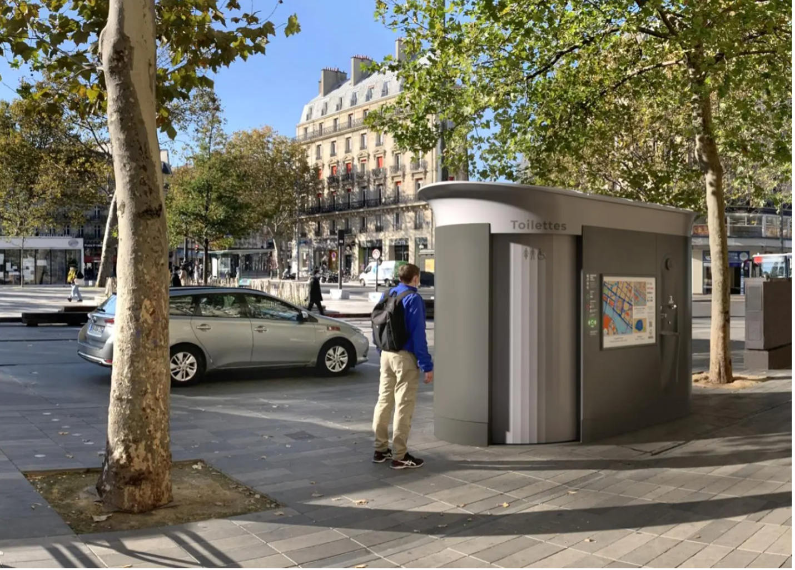

Introduction

The study area is Chicago, Illinois. This area was chosen because of recent developments in policy for providing public toilets. The city of Chicago has signed a contract with JCDecaux, who already furnishes the city’s sheltered bus stations, to purchase four self-cleaning public toilets. Currently in pilot phase, there will be four new self-cleaning toilets installed in two central wards. JCDecaux, based in France, has installed 2,500 public, self-cleaning toilets in cities around the world. Paris leads with approximately 400 public toilets throughout the city. With a population of 2.16 million, Paris is comparable to Chicago’s 2.7 million people. To match the density of toilets per capita, Chicago would need to install almost 500 toilets, while to match the proportion of toilets to urban area, Chicago would need to install 2,350 toilets.
Chicago currently has around 500 public restrooms between civic centers, field houses, and public buildings. However, these have limited hours, closing in the evening, and are only open seasonally, never in the winter. These bathrooms often are dirty, hard to find, and unknown to the public or tourists. Additionally, even though private businesses are required to provide a restroom, many do not feel comfortable using these spaces or are denied from use regardless of regulation. Many transit workers, like bus operators, note that it is extremely difficult to find a restroom on their route and must hold up the line on occasion in search of public toilets. Many agree that additional, 24 hour, self cleaning, free, public toilets would be a value asset to the city. So that just leaves the questions of where?
Data Collection
The data for this project was sourced from the Chicago Data Portal as shapefiles and CSVs. The citations data was filtered for public urinations and converted to a raster file with resolution of 10 acres using a kernel density transformation. This heat map was used as a proxy for need of restrooms or inadequate access to public restrooms. The parks are a common recreation area and often a location where one may spend a considerable amount of time. A ¼ mile buffer was created, which is approximately a five-minute walk for the average adult. This was chosen as a reasonable amount of time one may be willing to walk to reach a restroom. CTA train stations were chosen as the next input. Bus and train operators have access to train stations and many people travel through train stations during a regular commute. Because train stations are more regularly visited and incorporated into the average Chicagoan’s day, a 5 minute and a 10 minute (¼ and ½ mile) were created.
The model chosen was ordinal combination. Every layer was given a value of 1, where the parks and park buffers were separate layers and the train stations, 5 minute buffer, and 10 minute buffer were separate layers. This meant that, for example, at a train station, the suitability score would be 3, because the addition of the train station, 5 minute buffer, and 10 minute buffer. All layers were converted to raster at a resolution of 10 acres to match the Citation Heat map.